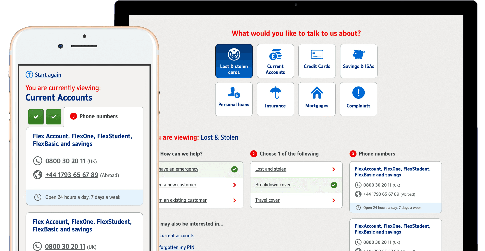

Nationwide Building Society's largest ever improvement in customer satisfaction

Designed and delivered a new 'Contact Us' tool for Nationwide Building Society - translating a fragmented, high-friction support experience into a streamlined, self-serve journey. Working collaboratively in an agile scrum delivery team, the project combined deep user research with rapid prototyping and iterative testing. The result was a 36% improvement in customer satisfaction - the largest single CSAT increase in Nationwide's history.
Customers struggled to find the right contact method for their query, often bouncing between channels - phone, branch, secure messaging - without clear guidance. This created frustration and unnecessary call volume.
The existing Contact Us journey had consistently poor CSAT scores, reflecting a genuine gap between what customers needed and what the experience provided.
Began with qualitative research to understand the full scope of the problem - interviewing customers about their support experiences, mapping existing journeys across all contact channels, and identifying where friction was highest.
Created detailed customer journey maps across all contact channels to visualise pain points and identify opportunities for improvement. This became a key artefact for aligning stakeholders.
Synthesised research findings into clear design principles for the new tool: help customers find the right channel for their query; reduce unnecessary phone contact; provide clarity and confidence at every step.
Designed the new Contact Us tool using Axure and Sketch - building low-fidelity wireframes to test concepts quickly, then iterating to high-fidelity prototypes based on user feedback.
Rather than presenting customers with a flat list of contact options, the new tool guided users through their query type - surfacing the most appropriate contact method based on what they needed to do. This reduced decision fatigue and improved confidence.
Ran multiple rounds of usability testing throughout the design process - refining the journey based on real user behaviour and ensuring the final solution would perform in the real world.
Delivered as part of Nationwide's first Digital Agile Scrum Delivery Team - working in sprints with daily standups, regular reviews with stakeholders, and continuous feedback loops with development. This approach enabled faster delivery and more responsive design decisions.
The new Contact Us tool delivered a 36% uplift in CSAT - the largest single improvement in Nationwide's history. This directly reflected the impact of replacing a fragmented, confusing experience with a clear, guided, self-serve journey.
By helping customers find the right support channel for their specific query, the tool reduced misdirected contact - particularly unnecessary phone calls - saving operational cost while improving the customer experience.
This project was delivered as part of Nationwide's first Digital Agile Scrum Delivery Team, helping to shape and validate the agile methodology that would be adopted more broadly across the organisation's digital teams.